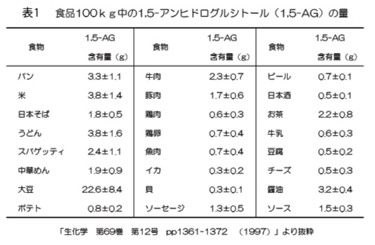

1,5-アンヒドログルシトール
1,5-アンヒドログルシトール（1,5-AG、商品名：ANSOROL）は当社が世界に先駆けて量産化に成功した希少糖の一種で、新しいタイプの機能性素材として、スキンケア商品、オーラルケア商品などへご使用いただけます。
INCI: Anhydroglucitol
CAS: 154-58-5
化粧品の成分表示名称(日本化粧品工業連合会)： 無水ソルビトール
| 製品形状 | 包装単位 |
|---|---|
| 粉末 | 100g |
| 1Kg | |
| 5Kg | |
| 1%水溶液 *防腐剤含有 |
1Kg |
| 20Kg |
上記以外をご要望の際は、別途ご相談ください。
●1,5-アンヒドログルシトールとは？
1,5-アンヒドログルシトール(ANSOROL)は1,5-AGとも呼ばれる無水ソルビトールの一種であり、ブドウ糖によく似た構造をもつ希少糖です。植物、動物、ヒトの体内に至るまで自然界に広く存在する天然物の一種でもあります。
1,5-アンヒドログルシトールは身近な食品に幅広く含まれています。（表１）ただその量は少なく、比較的含有量の多い大豆でも100kg中に僅か23ｇ（23ppm）程度しか含まれていません。
●スキンケア
1,5-アンヒドログルシトール(ANSOROL)には「保湿性」や「コラーゲン産生促進」などのアンチエイジングに繋がる効果を持つことから、新しいスキンケア素材としてご使用いただけます。
保湿効果
1,5-アンヒドログルシトールには高い保湿効果があり、とてもさらさらとした使用感が特徴です。
コラーゲン産生促進作用
1,5-アンヒドログルシトールはⅠ型コラーゲンの産生を促進する効果があります。
＊ Ⅰ型コラーゲン：ヒトの皮膚に存在するコラーゲンのうち90%以上を占めるコラーゲン。
コラーゲン産生促進作用
1,5-アンヒドログルシトールはⅠ型コラーゲンの産生を促進する効果があります。
＊ Ⅰ型コラーゲン：ヒトの皮膚に存在するコラーゲンのうち90%以上を占めるコラーゲン。
非糖化性
多くの糖類はタンパク質と結びつくことで「糖化」という現象を起こします。
このとき作られた物質を終末糖化産物（AGEs）といいますが、近年このAGEsは加齢性黄斑変性、皮膚のくすみ、皮膚の弾力低下などの様々な皮膚疾患の発症や肌トラブルに大きく関すると言われています。 しかしながら1,5-アンヒドログルシトールはその特徴的な構造により「糖化」を起こさない素材です。
●オーラルケア
1,5-アンヒドログルシトール(ANSOROL)には、虫歯の原因となるミュータンス菌（虫歯菌）の生育や歯垢（プラーク）の形成を抑制する効果を持つことから、新しいオーラルケア素材としてご使用いただけます。
ミュータンス菌の生育阻害
1,5-アンヒドログルシトールはミュータンス菌の生育を強く抑制します。
水不溶性グルカン合成阻害
1,5-アンヒドログルシトールは、ミュータンス菌による歯垢（プラーク）の原料である“水不溶性グルカン”の生成を阻害します。
水不溶性グルカン合成阻害
1,5-アンヒドログルシトールは、ミュータンス菌による歯垢（プラーク）の原料である“水不溶性グルカン”の生成を阻害します。
●安全性
1,5-アンヒドログルシトール（ANSOROL）はヒトの体内にも存在する生体成分であるため、とても安全性の高い物質です。以下の安全性試験においても良好な結果が得られました。
- ■ 単回投与毒性試験
- ■ 皮膚刺激性試験
- ■ パッチテスト
- ■ 遺伝毒性試験
- ■ 眼刺激性試験
- ■ 連続皮膚刺激性試験